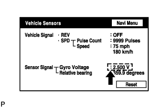

DTC 58-10 Gyro Error |
DTC 80-10 Gyro Error |
| DTC No. | DTC Detection Condition | Trouble Area |
| 58-10 | A ground short, power supply short, or open circuit in the gyro signal. |
|
| 80-10 | A ground short, power supply short, or open circuit in the gyro signal. |
| 1.CHECK VEHICLE SENSOR (NAVIGATION CHECK MODE) |
 |
Enter the "Navigation Check" mode and select "Vehicle Sensors" (Click here).
Check the gyro voltage.
|
| ||||
| OK | |
| 2.CLEAR DTC |
Clear the DTCs (Click here).
| NEXT | |
| 3.RECHECK DTC |
Recheck for DTCs and check if the same trouble code is output.
|
| ||||
| OK | ||
| ||